نگهبانان، یاران و قهرمانان
هورامان سپاه همیشگی ندارد. سه گونه جنگجو میتوانند در نبرد باشند:
- نگهبانان شما: اعضای خانوادهٔ خودتان. همه با چوبدستی چوپانی میجنگند و هر نگهبان میتواند یک شیوهٔ دیگر هم یاد بگیرد. نگهبانِ شکستخورده زخمی به خانه برمیگردد و چند روز استراحت میکند.
- یاران اجیر: هورامان در جنگهای همسایهها به یاریشان میرفت و آنها هم در عوض یاری میکردند. جنگجویان روستاهای همپیمان برای مزدی از آب انار به میدان میآیند، در آتشدان دورهمی جا میخواهند، فقط در یورشها میجنگند و پس از یورشی که در آن جنگیدند به خانه برمیگردند.
- قهرمانان: دو تن از بزرگان روستا که با آتشگاه قهرمانان گشوده میشوند. آنها در یورشها همراه میشوند و پس از شکست استراحت میکنند.
جنگجویان
هزینهٔ اجیر کردن برای یاران در میدان است؛ در تابستان، اگر در اردوگاه تابستانی لبنیات کافی باشد، ارزانتر است. «جا» فضایی است که هر یار در آتشدان دورهمی میگیرد.
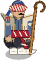
چوپان یار اجیر · مهارت نگهبان
چوپانِ نمدپوش با عصای کج. سگهایی که تا ۳ خانهاش بجنگند ۲۵٪ آسیب و سرعت بیشتر میگیرند.
| جان | آسیب | هر ضربه | برد | سرعت | جا | میدان | اجیر کردن |
|---|---|---|---|---|---|---|---|
| ۵۵ | ۸ | ۱ ثانیه | ۰٫۷۵ | ۲ | ۱ | ۱ | ۲۵ · ۶ ثانیه |
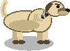
سگ گله یار اجیر · مهارت نگهبان
سگ گلهٔ تیز. دفاعها را شکار میکند، از لبهٔ تراسها میپرد و از ۲۵٪ پرتابهها جاخالی میدهد.
| جان | آسیب | هر ضربه | برد | سرعت | جا | میدان | اجیر کردن |
|---|---|---|---|---|---|---|---|
| ۳۸ | ۷ | ۰٫۷ ثانیه | ۰٫۷۵ | ۳٫۲ | ۱ | ۱ | ۲۲ · ۵ ثانیه |
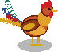
خروس یار اجیر
ریز و ارزان. بر فراز دیوارها و لبهٔ تراسها بال میزند و هنگام فرود بانگ میدهد (۲۰٪ سرعت بیشتر برای همراهان). ساختمانهای تولیدی را نوک میزند.
| جان | آسیب | هر ضربه | برد | سرعت | جا | میدان | اجیر کردن |
|---|---|---|---|---|---|---|---|
| ۱۲ | ۴ | ۰٫۸ ثانیه | ۰٫۷ | ۲٫۸ | ۱ | ۲ | ۱۲ · ۳ ثانیه |
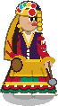
دختر فلاخنزن یار اجیر · مهارت نگهبان
چابک و دلیر، با لباس چیندار و کلاهی از سنگهای رنگی. فلاخن را میچرخاند و از فاصلهٔ متوسط سنگ میاندازد. از نزدیک شکننده است.
| جان | آسیب | هر ضربه | برد | سرعت | جا | میدان | اجیر کردن |
|---|---|---|---|---|---|---|---|
| ۴۶ | ۹ | ۱٫۰۵ ثانیه | ۴ | ۲ | ۲ | ۲ | ۷۰ · ۱۰ ثانیه |
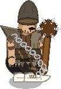
لات یار اجیر · مهارت نگهبان
لات زنجیر و چماق به دست. آسیب به دیوارها ×۳؛ وقتی جانش از نیمه کمتر شود خشمگین میشود (۵۰٪ آسیب بیشتر).
| جان | آسیب | هر ضربه | برد | سرعت | جا | میدان | اجیر کردن |
|---|---|---|---|---|---|---|---|
| ۲۷۰ | ۲۲ | ۱٫۳ ثانیه | ۰٫۹ | ۱٫۷ | ۳ | ۲ | ۹۰ · ۱۶ ثانیه |
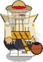
زنبوردار یار اجیر · مهارت نگهبان
عسلکارِ نقابدار در کُلَبالی نمدی. زنبورها نیشش نمیزنند: کندوها او را نادیده میگیرند. هر ۱۱ ثانیه دودان میاندازد که مدافعان را ۱٫۵ ثانیه گیج میکند و کندوهای نزدیک را آرام.
| جان | آسیب | هر ضربه | برد | سرعت | جا | میدان | اجیر کردن |
|---|---|---|---|---|---|---|---|
| ۱۳۰ | ۹ | ۱ ثانیه | ۰٫۸۵ | ۱٫۹ | ۳ | ۳ | ۱۱۵ · ۱۸ ثانیه |
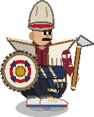
نگهبان کُلَبال یار اجیر · مهارت نگهبان
نگهبان سنگین در کُلَبالی ضخیم نمدی با شانههای تیز و سپری گرد از نمد. کند و بسیار سختجان؛ مدافعان و برجها را به سوی خود میکشد و عقبراندهشدن و گیجی را به خود نمیگیرد.
| جان | آسیب | هر ضربه | برد | سرعت | جا | میدان | اجیر کردن |
|---|---|---|---|---|---|---|---|
| ۶۴۰ | ۱۵ | ۱٫۴ ثانیه | ۰٫۹۵ | ۱٫۲ | ۶ | ۳ | ۲۳۰ · ۳۲ ثانیه |
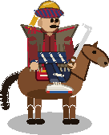
سوارکار یار اجیر · مهارت نگهبان
سوارهنظام. یورش: اولین ضربه به هر هدف تازه ×۳ آسیب میزند. فقط پله و جاده.
| جان | آسیب | هر ضربه | برد | سرعت | جا | میدان | اجیر کردن |
|---|---|---|---|---|---|---|---|
| ۲۰۰ | ۱۹ | ۱ ثانیه | ۰٫۹ | ۳٫۶ | ۴ | ۳ | ۱۶۰ · ۲۴ ثانیه |
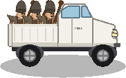
وانتسوار فعلاً به کار نمیرود
وانت سفید کوهستان. جان فراوان، ساختمانها را میکوبد و بعد از اولین هدف یا وقتی ویران شود ۳ لات پیاده میکند. فقط جاده و زمین هموار.
| جان | آسیب | هر ضربه | برد | سرعت | جا | میدان | اجیر کردن |
|---|---|---|---|---|---|---|---|
| ۷۲۰ | ۳۶ | ۱٫۴ ثانیه | ۱٫۱ | ۴ | ۸ | ۴ | – |
قهرمانان
قهرمانان با کلاش ارتقا مییابند، تا سطح دیوانخانه شما. قهرمانِ شکستخورده پیش از یورش بعدی استراحت میکند؛ کلاش میتواند استراحتش را کوتاه کند.
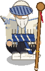
کاک احمد
ریشسفید روستا، با ریش سپید، دستار و عصای قدیمیاش. نیروهای نزدیک او در برابر عقبراندهشدن، گیجی و هراس (کندی) پایدارترند و ۱۵٪ آسیب کمتر میخورند.
| سطح | جان | آسیب | ارتقا | استراحت پس از شکست |
|---|---|---|---|---|
| ۱ | ۲۶۰ | ۱۲ | – | ۱۰ دقیقه |
| ۲ | ۳۲۰ | ۱۴ | ۸ | ۱۳ دقیقه |
| ۳ | ۳۹۰ | ۱۶ | ۱۸ | ۱۷ دقیقه |
| ۴ | ۴۷۰ | ۱۹ | ۳۵ | ۲۲ دقیقه |
| ۵ | ۵۶۰ | ۲۲ | ۶۰ | ۲۸ دقیقه |
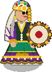
دایه گلبهار
مادربزرگ روستا. دفش را میزند و هر چند ثانیه موجی آرامبخش نیروهای اطرافش را درمان میکند.
| سطح | جان | آسیب | ارتقا | استراحت پس از شکست |
|---|---|---|---|---|
| ۱ | ۱۶۰ | ۵ | – | ۱۰ دقیقه |
| ۲ | ۱۹۵ | ۶ | ۸ | ۱۳ دقیقه |
| ۳ | ۲۳۵ | ۷ | ۱۸ | ۱۷ دقیقه |
| ۴ | ۲۸۰ | ۸ | ۳۵ | ۲۲ دقیقه |
| ۵ | ۳۳۰ | ۹ | ۶۰ | ۲۸ دقیقه |